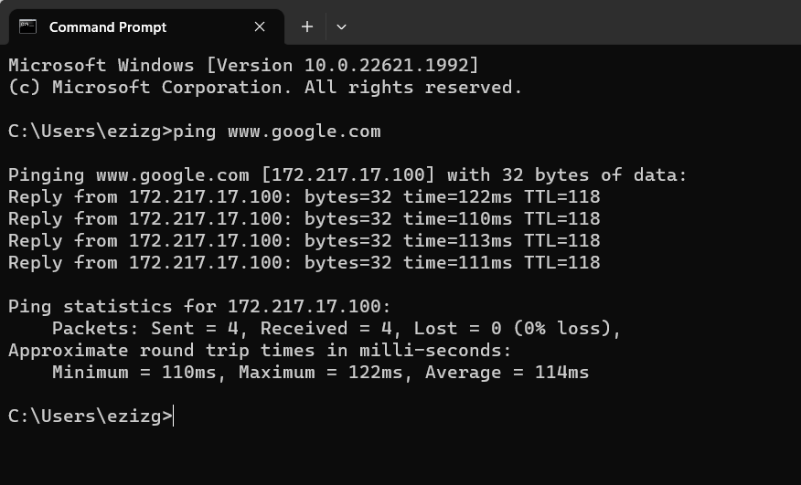

Redes
Inicio
Introducción a los Sistemas de Cómputo
Sistema Operativo
Base de Datos
Base de Datos pt.2
Redes
Desarrollo Web y HTML
Info Grupo
1.Como hacer un Cable de red
Ver Más
2.Tipos de Cables de Red
Ver Más
3.Comandos básicos de redes en CMD

Ver Más
4.Qué es y qué utilidades tiene un grupo de trabajo de Windows
Ver Más
Regresar al Menu Principal
Regresar